1. Loading failure and missing-plan states
ResolvedA missing plan still uses “We couldn't find that plan.” A transport/server failure now has its own retryable state and no longer masquerades as a 404.
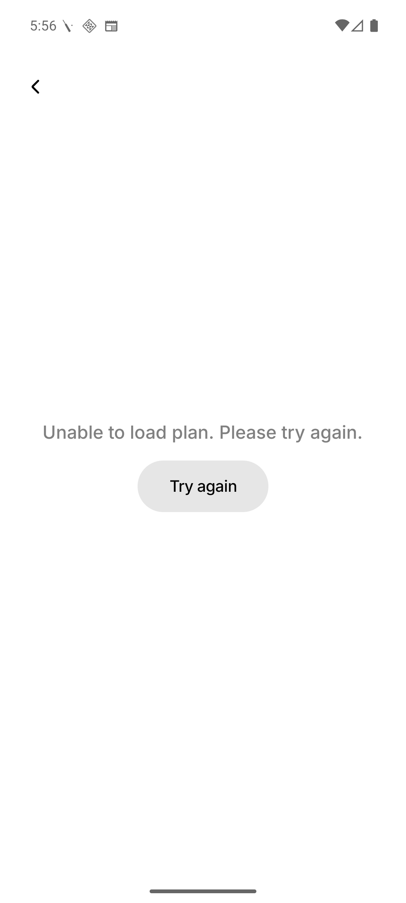
Implementation report · 24 August 2026
All ten reported areas were reproduced before implementation, corrected across the React Native client and Go backend, covered by regression tests, and verified on the Android emulator.
A missing plan still uses “We couldn't find that plan.” A transport/server failure now has its own retryable state and no longer masquerades as a 404.

Event Details now renders locale-aware commas in the date and period separators between date/time and audience values. Event cards retain their compact middle-dot style.
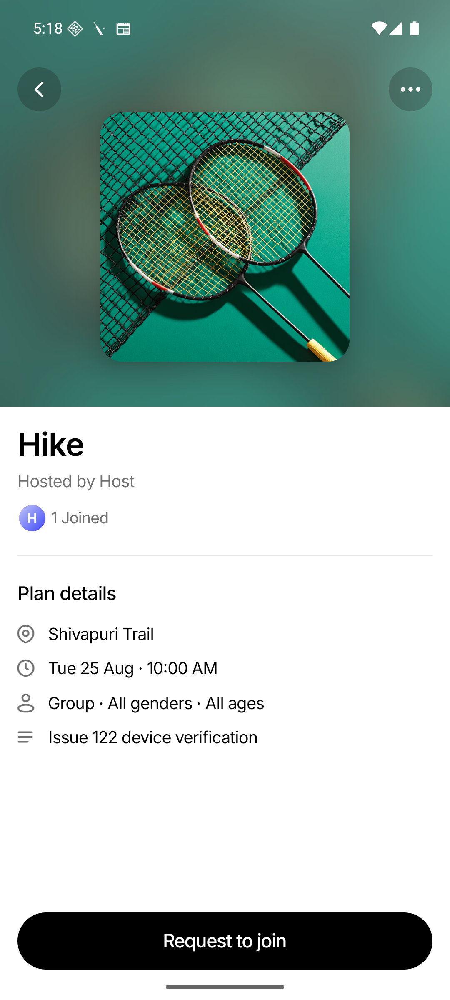
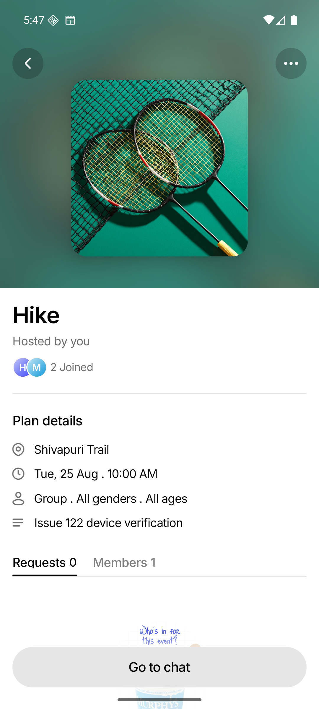
Clamping is driven by measured rendered lines, not character count. Long introductions stop at three lines and place “See more” inline on the final row.
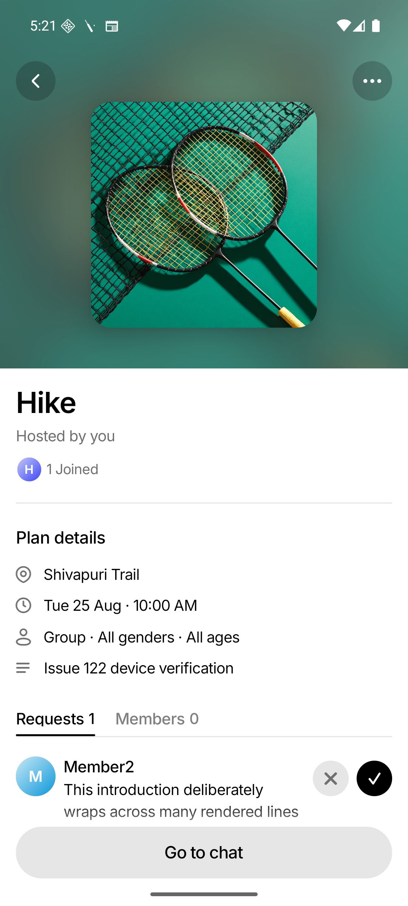
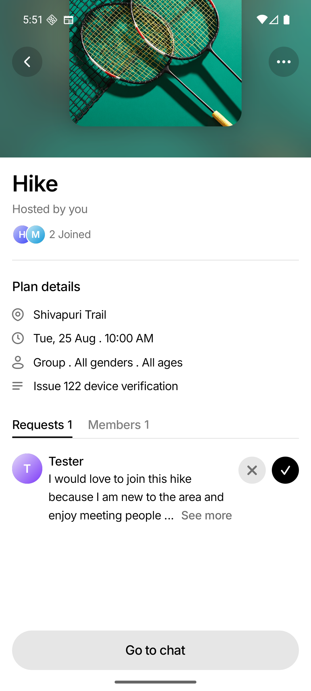
The Go backend now persists “Plan details updated.” The schema backfill recognizes both historical and new copy, and the client renders either as a system message.
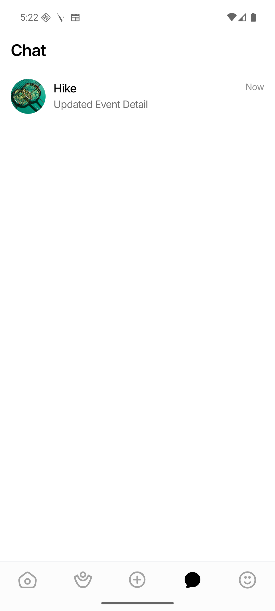
The member menu no longer jumps into an ambiguous form. “Report & Block” opens an explicit confirmation describing the consequence, then continues to the report form.
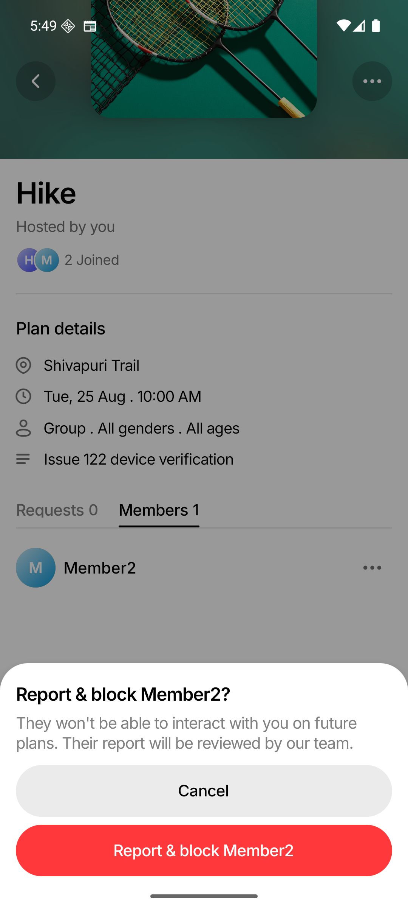
The placeholder is “Tell us why you're reporting this plan”; the action is “Submit” / “Submitting...”; and failures use “Couldn't submit report. Please try again.”
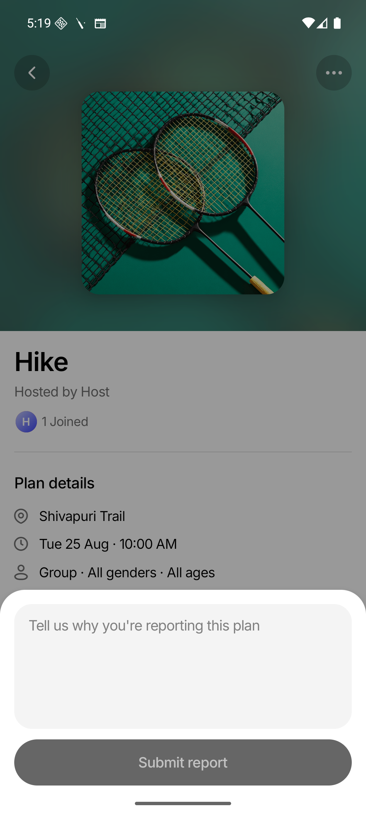
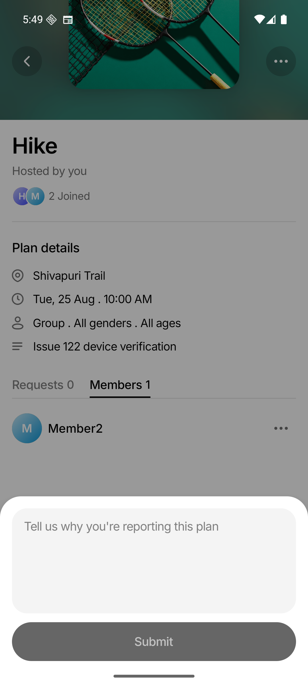
The neutral action is now exactly “Cancel.” Leave failures use the requested plan-specific wording: “Couldn't leave this plan. Please try again.”
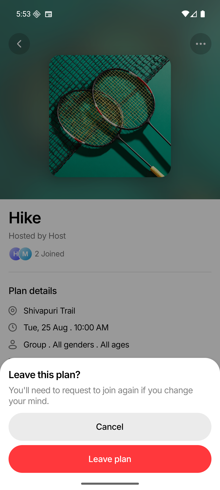
The host's neutral action is now “Cancel.” Delete failures consistently say “Couldn't delete this plan. Please try again.”
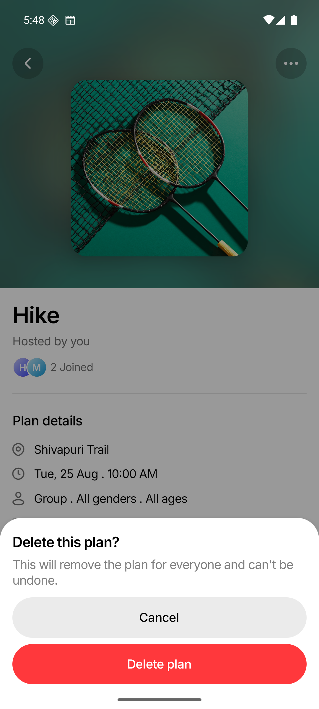
Status-to-copy mapping is centralized. Expected conflicts remain specific, while network failures and unknown server responses produce fixed user-safe messages; raw response bodies are never displayed.
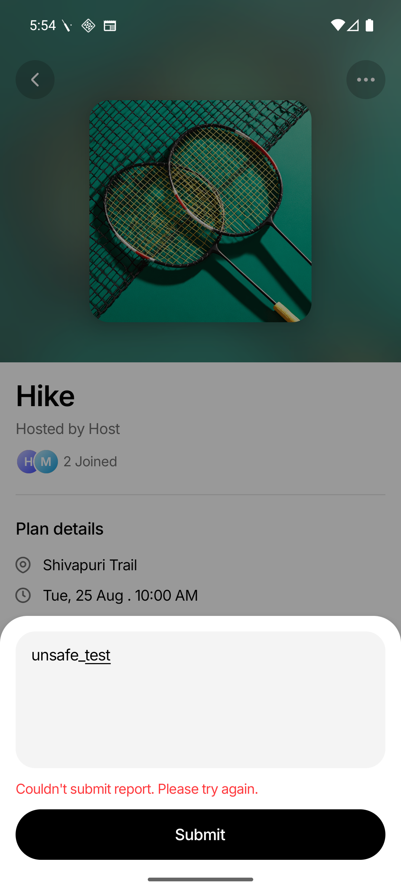
The unreachable manage and pendingRequest prompt variants, state setters, render routes, and obsolete tests were removed. The member menu now exposes only live actions.
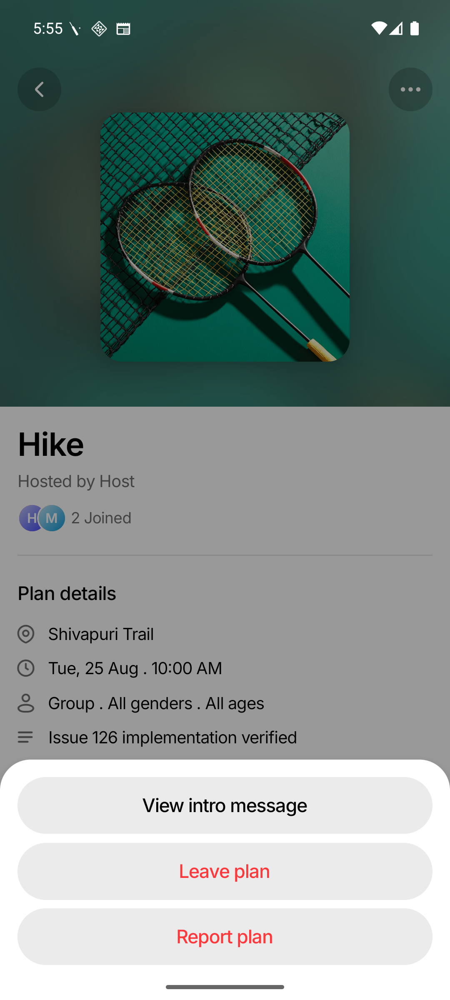
| Gate | Result | Evidence |
|---|---|---|
| Frontend tests | Passed | 84 suites · 1,248 tests |
| TypeScript | Passed | tsc --noEmit |
| Backend tests | Passed | go test ./... |
| Lint | Passed | Existing warning baseline only; no errors |
| Whitespace | Passed | git diff --check |
| Android emulator | Passed | WEIF_API_36, host/member/requester flows |